Measuring Light#

Prepare, house and use the surplus B&W Tek BTC100-2S spectrometer module as the detector for the DIYraman system.
This page focuses on the practical steps you need to:
- Inspect and clean the used unit
- Mount it in a simple printed housing
- Power it up and talk to it over RS-232
- Acquire a first spectrum and apply a basic wavelength calibration
| Specs | |
|---|---|
| Range | ~400nm - 650nm |
| Grating | 1800l/mm, blaze at 500nm |
| Input slit | 100µm (wide) |
| Coupling | SMA905 fiber |
| Detector | Sony ILX511 linear CCD |
| Resolution | 2048 pixel spectrum |
| Power | 5V barrel jack |
| Connection | RS-232 serial |

Learn more about the BTC100-2S
For an in-depth look into the capabilities and internal design of this model, visit this blog post: “Home Optical Spectrometry: The B&W Tek BTC100-2S”
Parts and Materials#
Visit the complete Bill of Materials
Everything you will need, both printed parts and sourced parts, along with their cost and supplier, can be viewed in the dedicated BOM!
Sourced parts#
| Qty | Name | Model / Spec | Notes |
|---|---|---|---|
| 1x | Spectrometer unit | B&W Tek BTC100-2S | Or any other spectrometer - ideally with SMA905 input, if you use fiber. |
| 1x | Fiber optic cable, 200 μm | Any, SMA905-SMA905 1m VIS-IR 200um | - |
| 1x | Data cable | RS-232 to USB | Choose a chipset compatible with your OS (many FTDI / Prolific chips work reliably). |
| 1x | Power supply | 5V, ~3A, DC barrel jack | |
| 1x | Calibration lamp | Dedicated calibration / CFL / mercury-vapor lamp | Needs several sharp lines near ~550 nm for wavelength calibration. |
Spectrometer cost consideration
The used BTC100-2S board - although quite old - will still be significantly cheaper than buying parts for a DIY spectrometer. If you are lucky (or persistent enough) to spot a great deal of a more modern unit, that's even better.
Printed parts#
| Qty | Part name (.stl) | Print preview |
|---|---|---|
| 1x | Spectrometer-Case_Bottom |
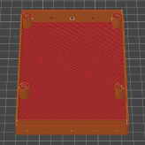 |
| 1x | Spectrometer-Case_Top |
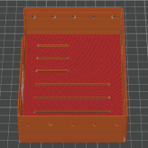 |
| 1x | Spectrometer_Screw-Cover |
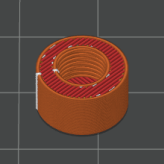 |
Health & safety – sanding fibre-filled plastics
When sanding or trimming 3D-printed parts made from PETG-CF or other fibre-filled filaments, wear at least a surgical mask. Fine carbon or glass fibres can accumulate in your lungs with repeated exposure.
Inspect and Clean the Spectrometer#
Before printing parts or powering anything, make sure your spectrometer arrived intact and is free of loose contamination.
Visual inspection#


Check:
- The PCB is not bent, cracked or visibly repaired.
- The SMA905 input stud is straight and firmly attached.
- The 50 µm slit window in front of the spectrometer optics is intact (no cracks or chips).
- The heatsink, fan and connectors are firmly attached and not visibly corroded.
If you spot severe mechanical damage (cracked PCB, broken slit, missing components), contact the seller before investing further time.
Cleaning#

- Use a blower or compressed gas to gently dust off the PCB and the fan.
- Lightly dampen a lint-free cloth with 99% IPA.
- Wipe non-optical surfaces: metal case, heatsink, fan frame, backside of the PCB.
- Use cotton swabs with a small amount of IPA to clean tight areas around connectors and edges.
- Do not touch the slit glass, sensor or any exposed optical surfaces directly.
Avoid optical surfaces
Don't disassemble the spectrometer's optical assembly or try to adjust any of its components, unless you know what you're doing. Avoid getting any liquid into the input or onto any optical surface.
Housing and Mounting#
The BTC100-2S is an exposed PCB assembly. A simple printed case protects it from dust, stray light and mechanical damage, and makes overall handling easier.

Print seams for precise holes
Avoid seam placement directly inside precise holes. Random seam positioning often yields better clearance for functional features like standoffs and connector cut-outs.
Install PCB standoffs#
- Place the
Spectrometer-Case_Bottomon your work surface. - Identify the four mounting bosses that match the BTC100-2S PCB hole pattern.
- Screw the included standoffs into these bosses.
- Confirm that the height of the standoffs provide enough clearance.
Mount the spectrometer in the case#
- Carefully lower the BTC100-2S onto the standoffs so that:
- All four mounting holes align with the standoffs.
- The SMA905 input lines up with the circular opening in the case front.
- Fasten the PCB using four M3 screws, tightening them evenly.
- Place the
Spectrometer-Case_Topon the bottom part and close the housing.
Powering On and Connecting#
This section gets the spectrometer powered and talking to your computer.
Warm-up behaviour#
- Connect the 5V / ≥3A power supply to the barrel jack.
- Plug it in – there is no power switch, so you immediately hear the small fan spin up.
- Leave the unit on for ≈ 10 minutes before serious measurements.
Warm-up time? Cool-down time!
The BTC100-2S uses a thermoelectric cooler (TEC) plus heatsink and fan to cool and stabilise the sensor temperature. Starting measurements immediately after power-on leads to higher background noise and random spikes until the temperature settles!
RS-232 to USB adapter#
- Connect the RS-232 adapter between the DB-9 port and your PC.
- Windows is assumed as the operating system, although it is possible - and tested -to run the original software inside of a virtual machine on an M1 Mac.
USB–RS-232 compatibility
Some USB-RS-232 chipsets behave poorly on non-Windows systems or inside virtual machines. A mid-range cable from a known brand (e.g. FTDI-based) tends to work more reliably than ultra-cheap clones, according to a forum post.
Acquiring your First Spectrum#
For initial testing, use the original B&W Tek software (“Spectrum Studio”) to confirm that communication and data acquisition work as expected.
Quick UI reference - Cheatsheet
See the dedicated page Spectrum Studio Cheatsheet for screenshots and an overview of the most relevant controls.
Software setup#
- Start Spectrum Studio with the spectrometer powered and connected.
- In case the program isn't working or executing correctly, run it in compatibility mode.
- Right-Click > "Properties" > "Compatibility" > "Run in comp..." > Check Box and Select "Windows 7" > Press "OK".
- If it does not auto-detect the device:
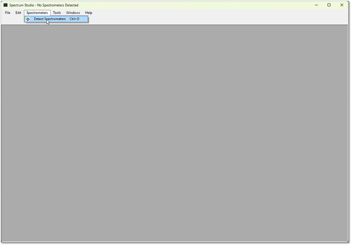
- Click “Detect Spectrometer” in the toolbar.
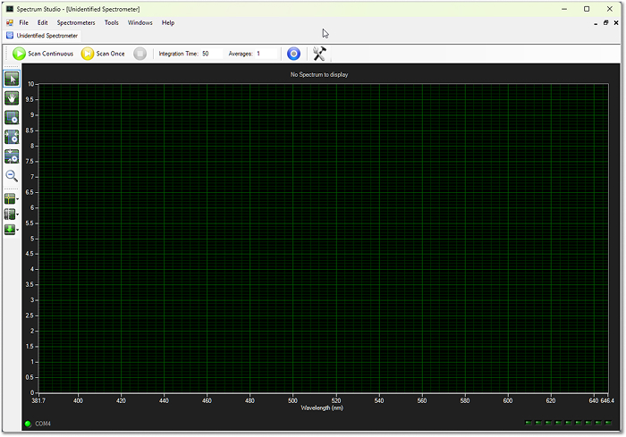
- Wait for the blank graph to appear.
3. Open the “Calibrate” window ( - settings icon at the right of the toolbar).
4. Set parameter C1 = 1 at the bottom and confirm with OK – this enables the wavelength calibration features you will need later.
Integration time and averaging#
The spectrometer behaves much like a camera sensor:
- Integration time ≈ camera shutter speed.
- ~50 ms: quick checks and rough alignment.
- 1500–20000 ms: typical range for final Raman measurements.
- Averages: number of individual spectra that will be acquired and averaged, even when you press “Scan Once”.
- During acquisition, the software shows the most recent scan.
- At the end of the series, it updates the display with the averaged (and optionally background-subtracted) spectrum.
Avoid saturation
Aim for a maximum signal well below the top of the y-axis. Saturated pixels distort line shapes and make later processing more difficult.
Capturing and subtracting background#
- Block the input slit (e.g. with your finger, a printed cap or tape).
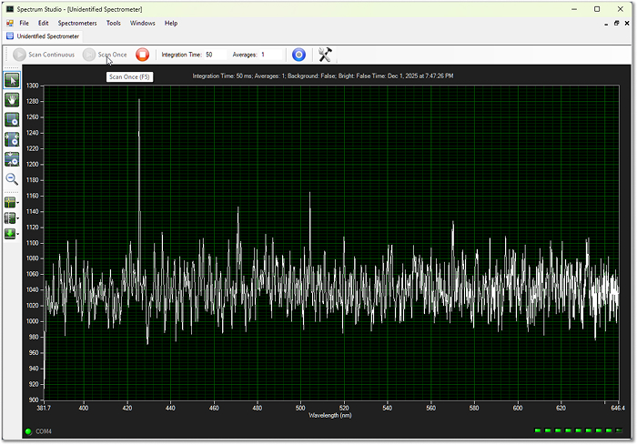
2. Start an acquisition with typical settings (e.g. 250–2000 ms, a few averages).
3. Use the green arrow icon in the left toolbar ( - background submenu) to:
- Capture the current spectrum - the noise print of the dark sensor - as background.
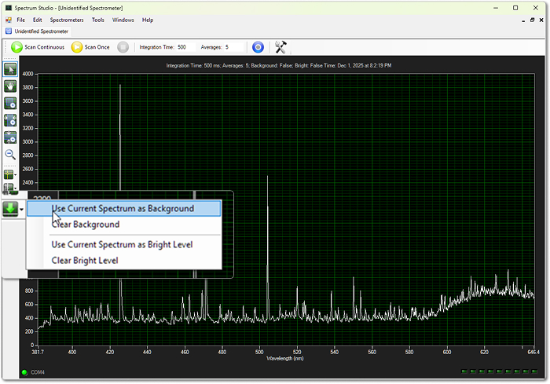
4. Scan again to capture a test - using a dedicated light source or just your room
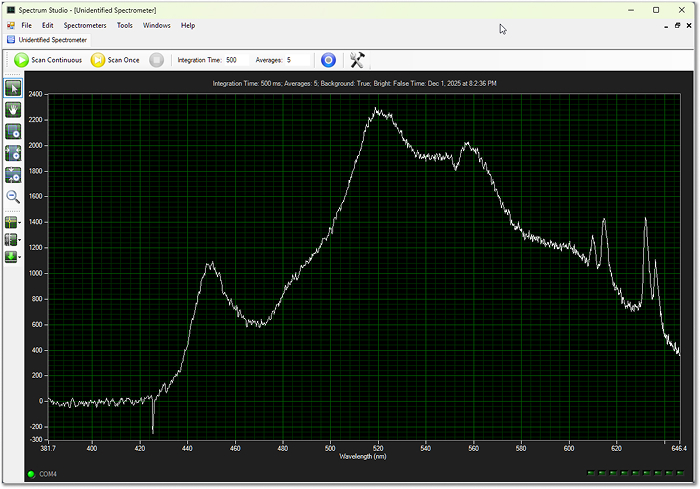
This background remains active and will be applied on all subsequent spectra until you clear or update it. The table below highlights the difference in quality of the final spectrum - with and without the subtracted sensor noise.
| With background subtraction (clean) | Without background subtraction (raw) |
|---|---|
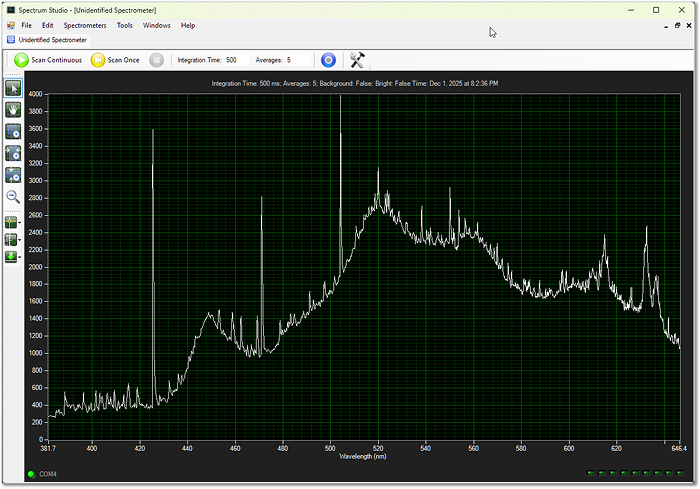 |
Re-acquire background after changing integration time
Whenever you change the integration time, capture a new background. Spectrum Studio does not automatically warn you or clear the old background – it will otherwise subtract an incorrect background.
Wavelength Calibration#
Proper wavelength calibration maps each CCD pixel index to a physical wavelength in nanometres. This step is essential for correctly scaled Raman shifts later on.
Choose a calibration source#
A good calibration source has:
- Several sharp, well-documented emission lines
- Lines close to the region of interest (around 550 nm for a 532 nm Raman system)
Suitable options:
- Mercury-vapour lamp (ideal, easiest)
- CFLs with visible mercury lines (abundant, low-cost)
- Dedicated calibration lamps from astronomy suppliers (more expensive)
You can find reference spectra and line lists for mercury-vapour lamps in many spectroscopy references and online databases.
Record calibration data#
- Acquire and apply a background of the sensor noise.
- If the spectrometer was just powered on, leave it running for roughly 10 minutes until the measured noise stabilizes.
- Turn off or dim ambient lights in the room to avoid stray lines.
- Place the calibration lamp so light enters the slit (directly or via SMA fibre, if used).
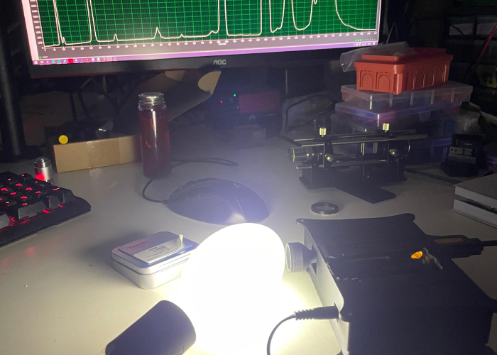
A mercury-vapour lamp was bought cheaply on eBay, along with its required ballast. This is an old picture with the lamp placed too close to the input slit.
- Adjust integration time until you get:
- Clearly visible peaks
- No saturated pixels
Now use the software’s cursor tool (two icons above background subtraction in the left toolbar):
- Drag the vertical line to each prominent spectral peak.
- For each peak, write down:
- The pixel index (x-axis value before calibration)
- The known wavelength (from your reference data)
Collect at least 4 calibration points across the usable range – air for more points to give a better fit.
Least-squares fitting in Spectrum Studio#
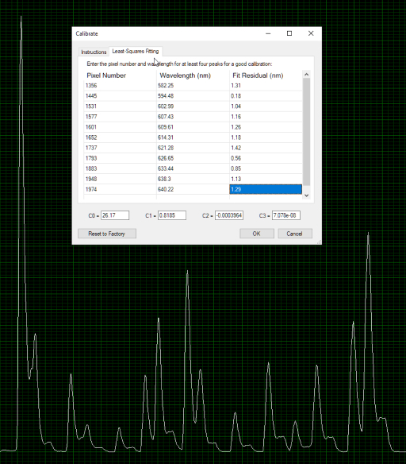 |
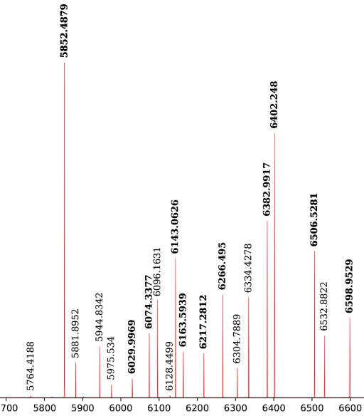 |
|---|---|
| Old image of the first ever calibration done using a dedicated calibration lamp. Least-squares fitting with all pixel numbers and respective wavelengths added - fit residual is calculated automatically. | This was the reference spectrum provided with the cheap calibration lamp, whose wavelengths lie mostly in the upper range of the Raman's design. |
- Open the Calibrate window again.
- Switch to the “Least-Squares Fitting” tab.
- Enter all recorded pixel indices and their respective wavelengths into the table.
- Let the software compute the calibration coefficients.
- Write the 4 calibrated coefficients down or take a screenshot for future reference.
- Confirm with OK, then take another scan.
- The coefficients are written and saved to the spectrometer's internal memory.
- The calibration only gets overwritten, if the coefficients are changed (or automatically calculated).
The x-axis should now be displayed directly in nanometers (nm) instead of raw pixel numbers.
Final check#
Laser safety
Never look directly into the beam or reflections, and be especially careful with cheap DPSS lasers that may leak significant invisible infrared.
- Gently shine a green 532 nm laser at the entrance slit.
- Avoid over-exposing the sensor; use reflections or a diffuser if needed.
- Acquire a spectrum and check the main laser line:
- Expect a peak somewhere around 528–536 nm, depending on laser quality and calibration accuracy.
- If the peak is significantly off, re-check your calibration points and repeat the least-squares fitting.